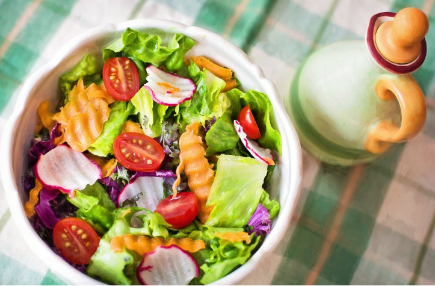

Cabbage salad recipe
There are many kinds of salad but Imma deal with the cabbage salad for today.

There is this notion that says healthy foods are disgusting and I cannot agree more but this one is both healthy and tasty. Imma need you to trust me on this one.
Description
- Prep time:30 minutes
- Total time:30 minutes
- Servings:10 servings
Ingredients
- 5 cups thinly sliced cabbage
- 2 cups thinly sliced red cabbage
- 2 red bell peppers, thinly sliced
- 2 carrots grated lenght-wise
- 1 grated beetroot
- 1 slice of pineapple
- 6 green onions; chopped
Procedure
- Dice the pineapple slice into small pieces.
- Mix all the ingredients together in a large bowl.
- Steam the mixture in low heat in a sauce pan for 3 minutes.
Bon appetit!